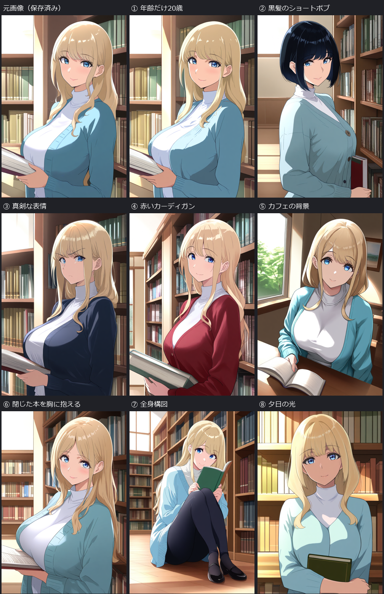

2026-10-21。ユーザー指定の①年齢だけ20歳、②髪型・髪色の変更、お任せの③〜⑧を各1枚生成。最初の09-animagine40-normal.api.jsonから、各画像で指定箇所だけを置き換えた。画像参照は入力していない。

左上は保存済みの元画像で、新規生成数には含めない。新規8枚、比較表示のみの既存画像1枚。番号は変更の指定を示し、指定達成を保証する表示ではない。
| 番号 | 変更した指示 | 結果・限界 | 原寸／UIワークフロー |
|---|---|---|---|
| ① | age 28 → age 20 | 年齢の数字だけ変更。髪・服・背景の特徴は近い。見た目から20歳という数値を確認した意味ではない | 画像 / UI |
| ② | long blonde hair → short black bob haircut | 黒髪の短いボブに変化。構図や顔も変わった | 画像 / UI |
| ③ | gentle smile → serious expression | 笑顔から真剣な表情へ。上着の色味や構図にも変化 | 画像 / UI |
| ④ | navy cardigan → burgundy red cardigan | 上着が赤色に変化。髪や服の形・構図は完全一致ではない | 画像 / UI |
| ⑤ | library, bookshelves → quiet cafe, cafe interior | 窓際のテーブルで本を開く構図。カフェという場所の識別は弱く、背景指定は部分達成 | 画像 / UI |
| ⑥ | holding book → holding a closed book against her chest | 開いた本が残り、閉じた本を胸に抱える指定は未達 | 画像 / UI |
| ⑦ | upper body → full body, head to toe, both shoes visible | 頭から両足の靴まで入る座り姿。立ち姿は指示していない | 画像 / UI |
| ⑧ | soft daylight → warm sunset light | 暖色の光と影へ。髪の長さ、服の襟、本の状態も変化 | 画像 / UI |
①以外の年齢指定は元の28歳。②はユーザー指定に従い髪型・髪色の両方を変更した。③〜⑧の具体的な課題は作業側が選んだ。各条件につき1回のみで再生成・選別は行っていない。
- モデル：animagine-xl-4.0-opt.safetensors。
- seed 42006、28 steps、CFG 5、Euler ancestral / normal、denoise 1.0。
- 832×1216、batch 1。元のネガティブプロンプトも変更していない。
- 元の画風指定full color anime illustrationと品質タグを維持。新しいセル塗り・グラデーション・ハイライトの説明を追加していない。元の光の指定soft daylightは⑧だけ変更した。
- 文章からの新規生成。IP-Adapter、LoRA、ControlNet、画像参照、マスク合成、顔修復、アップスケールは使用していない。
変更したのは文章の一部分でも、生成画像の他の部分まで固定されるわけではない。今回も顔・構図・衣装に揺れがある。これは同一人物の完全固定や「変更箇所以外の画素保全」のテストではない。
全プロンプト・設定・SHA256・目視評価 / 実際のAPI DAG / 検証 / ログ。PNGの埋込メタデータは専用サーバーで無効化し、副ファイルへ保存した。UIワークフローは既存の元テンプレートから出力。GUIでの再実行は未検証。
ComfyUI 0.42.1、Python 3.13.14。起動・生成・終了を含め約105.4秒、ComfyUIログのワークフロー実行は72.43秒。原画像・元のUI/APIワークフローのSHA256不変を確認。比較画像はレイアウトと縮小だけで、生成画像の描き直しや色補正はしていない。
既存ComfyUIのホスト上の専用localhostサーバーと専用プロファイルを使用。VM／Windows Sandboxではない。新規モデル取得、依存更新、標準設定の変更、ゲーム／SDK／GUIテストの実行なし。自分が起動したサーバーの終了と専用一時領域の削除を確認。ホスト側には実行スクリプト・画像・ワークフロー・記録を追加した。